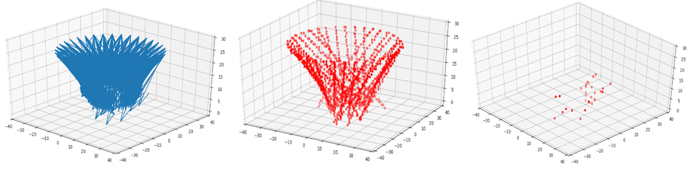
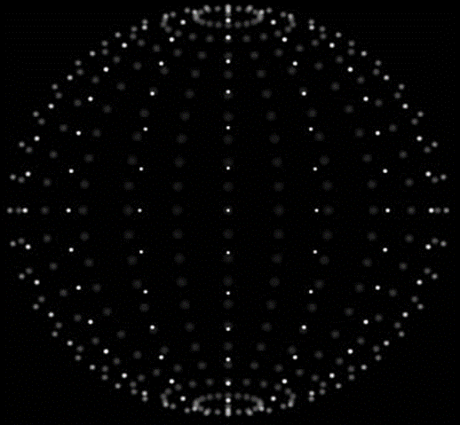
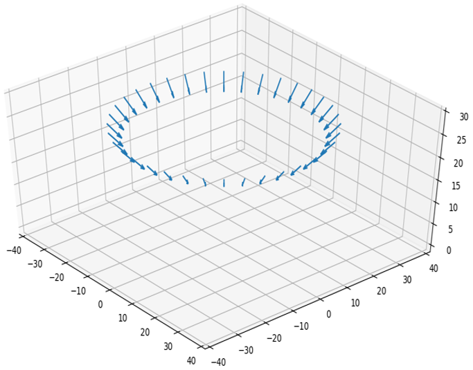
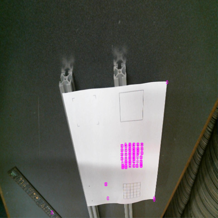
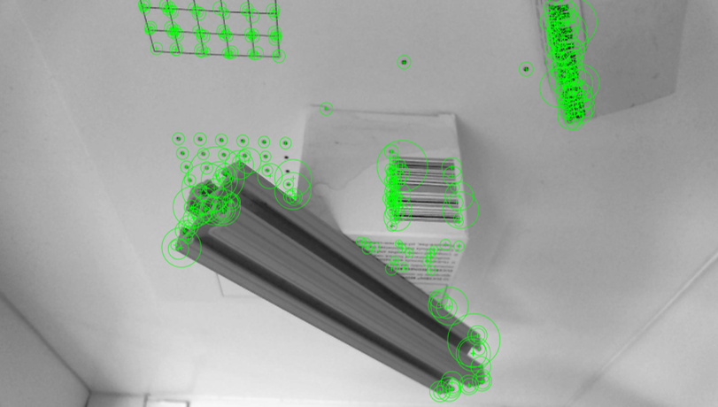
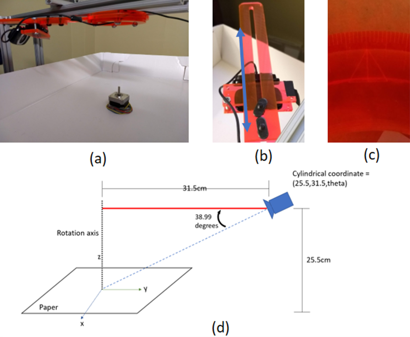
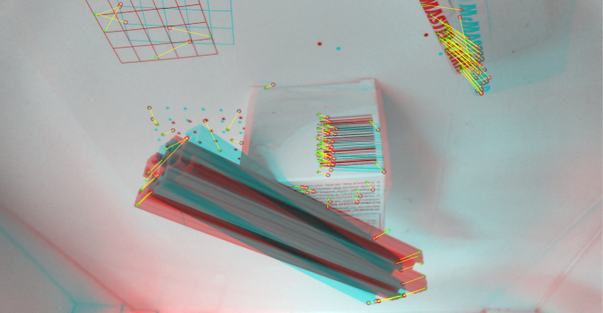
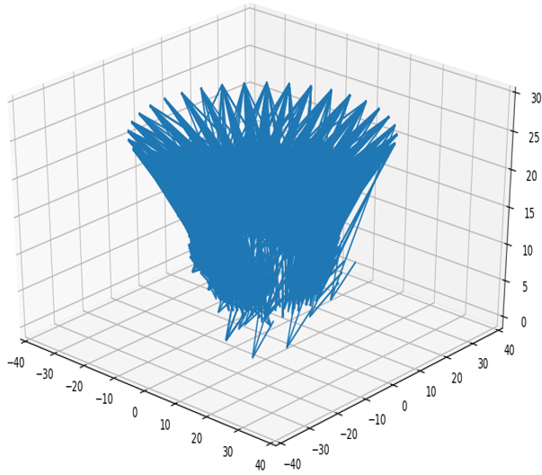
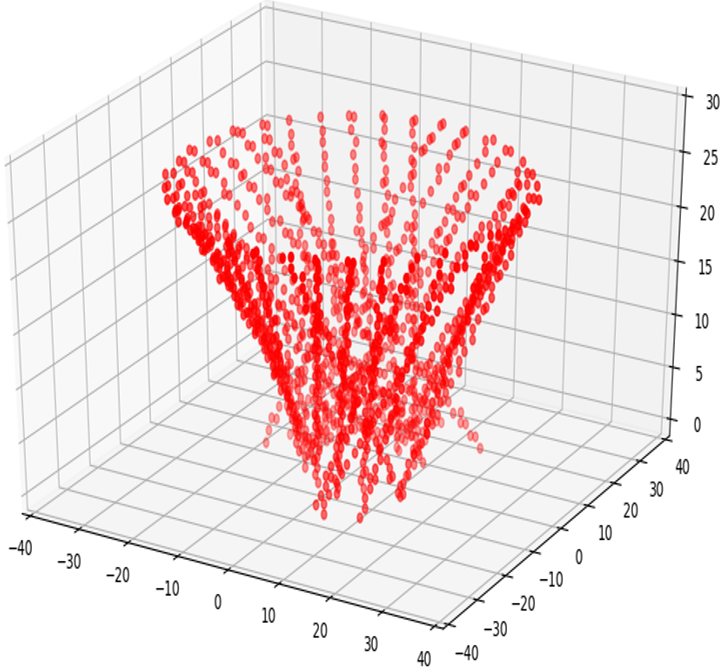

3D Object Reconstruction
Joey Jackson - ejackson61Corey Zheng - czheng45
Matthew Fraschilla - mfraschilla3
Chris O’Brien - cobrien42
Fall 2018 CS 4476 Intro to Computer Vision: Class Project
Georgia Tech
Abstract
The goal of this project is to be able to generate 3D models of real world objects by applying various computer vision algorithms on a set of images taken of the object from known world positions. Creating representations of the physical world in computers is a useful tool for further processing in graphics and simulations, so our project describes a method to easily automate the construction of a model of the structure of a physical object in a form easily processed by other programs.Teaser figure


Introduction
3D modeling of objects through vision is a powerful tool that can help decrease the effort needed to recreate models for use in graphics, vision, and engineering. Computer vision techniques can be applied to create 3D representations of objects through images using even basic equipment. The goal of the project is to create a 3D computer model of an object given multiple images of the object from known world positions and orientations. The user will provide an object and place it inside of a controlled camera rig, which will allow the camera to rotate about the object and take pictures from known positions. These images and coordinates can then be used as input to generate a 3D computer model of the object. The output will then be a set of 3D points and faces or edges that represent the object the user provided.Approach
Objects are placed within an imaging rig on top of a flat white platform that allows a camera to rotate around it. The camera’s azimuthal angle and distance to the rotation axis are fixed. Pictures are taken at 10-degree intervals.

Features are then extracted from the image. Currently, the best method of feature extraction is still being determined. Corner detection using Harris corner detection and SURF feature extraction were performed using OpenCV implementations.
Figure 1. Vector display of camera orientation and position.


Features are then matched pairwise between two images using euclidean distance, and the essential matrix of the system is estimated. The known camera position and orientation (radius, rotation angle, azimuthal angle, height) can be used to triangulate the 3D position of the features relative to the cameras to generate a point cloud. However, difficulties in the generation of relevant features and the impact on the results are discussed, along with a proposed change of approach.
Figure 2. Feature detection using Harris corner detection and SURF feature extraction.
Experiments and results
System hardware
Fig. 3 displays the camera rig. A webcam (Logitech HD C615) is used for imaging. The webcam is attached to a rotating ¼” thick laser-cut acrylic red bar. The attachment point is adjustable, and the webcam can slide closer to or further away from the rotation axis (Fig. 3b). The rotating bar is marked with 1 degree tick marks (Fig. 3c). The rotating camera assembly is mounted on aluminum brackets (80-20 12in -18in). Measured frame of the camera is shown in Fig. 3d. The distance from the center of the webcam lens to the axis of rotation was fixed at 31.5 cm. The azimuthal angle of the camera is adjustable, and was fixed at a measured angle of 39 degrees. The height measured from the center of the webcam lens to the object platform was fixed at 25.5cm.

Figure 3. Setup of the imaging system. (a) Overview of system in use. (b) Adjustable camera distance slider. (c) 1-degree markings on angle adjustment. (d) Schematic of camera position.
Experimental setup
The camera is set to acquire at a resolution of 1920x1080. A calibration sheet is imaged to test feature extraction. The calibration sheet consists of a number of dot and line grids with a 1 cm spacing. The calibration sheet is centered underneath the rotation axis, flat on the object platform. Images are taken for different rotations of the camera arm, every 10 degrees, for a total of 36 images per trial. Consistent lighting was attempted by keeping the device in the same location with the same light sources for imaging.Feature extraction tests
Multiple feature extraction methods were tested to determine which technique gave the most relevant points for 3D reconstruction. Corners were extracted using the Harris corner detected implemented in OpenCV. However, this resulted in corners being placed in overlapping areas. To solve this problem, the image is divided up into discrete bins, and any corners that are close enough together are lumped into a single bin. Figure 2 shows the resulting corners, which presents fewer noisy corners. SURF features were extracted using the OpenCV implementation of SURF, as shown in Figure 2. However, there are two problems encountered with the current approach. The first is that the features identified are not necessarily unique, and are therefore difficult to match. Note in Figure 4, the grid points are improperly matched, since the points on the grid are nearly identical. This issue occurs even on different geometry; improperly matched points are also present on the metal beam. The other problem is that the number of features detected with both approaches is low - there are few identified points, and therefore the resulting point cloud would be sparse. Additionally, some corners are not detected at all, such as the corners of the cardboard boxes.

A dense point cloud would be better suited to producing an acceptable reconstruction. A number of possible solutions will be investigated. Because of the known constraints of the camera system position, it may be possible to apply spatial verification of feature matches to ensure that matched features do not move drastically compared to the 10-degree rotation of the camera. An alternative solution would be to characterize camera properties such as the FoV and spherical aberration, and use this data to project rays through each pixel from the camera’s current position. Similar to the Hough transform, a 3D bin space can be formed, and by projecting rays through each edge detected by the Canny filter through the bin space, the bins with many crossing rays can be identified as structures in 3D space as seen in figure 5.
Figure 4. Corresponding feature matches using descriptor euclidean distance.



Figure 5. Voting in 3D Vector Space